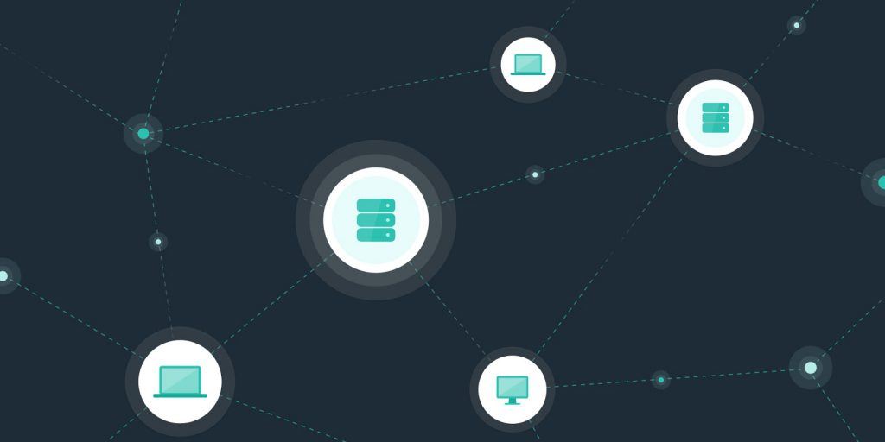

안녕하세요, 새해 복 많이 받으시길 바랍니다! 지난해 출시된 다중 담보 다이는 세계 각지의 다양한 신규 사용자를 끌어들이고 있습니다.
메이커 프로토콜이 제공하는 다이, 블록체인 기술, 암호화폐 등의 모든 것들을 새로운 이용자 분들이 이해하실 수 있도록 앞으로 6부작의 암호화폐 시리즈를 게시하고자 합니다. 본 시리즈는 디지털 자산의 장점부터 암호화페를 사는 방법, 암호화폐 차트를 보는 방법 및 이것들이 중요한 이유까지 모든 것들을 다룰 예정이니 많은 관심 부탁드립니다.
디지털 화폐는 전세계의 조직과 시장을 뒤흔들고 있으며, 모두를 위한 탈중앙화와 경제적 자유를 촉발하고 있습니다. 암호화폐의 매력의 근본에는 블록체인 기술이 있으며, 이는 특히 금융 산업에 심대한 혁신을 불러오고 있습니다.
예를 들면, 전세계 최초의 중립적인 디지털 화폐인 메이커다오의 스테이블코인 다이는, 이더리움 블록체인 상에서 개발되었고 하이퍼 인플레이션에 내성이 있습니다. 미국 달러에 연동(Soft-pegged)된 다이를 통해, 개인과 기업은 제3자의 간섭이나 변동성 리스크 없이 암호화폐의 이점들을 누릴 수 있습니다. 이를 통해 메이커다오는 빠르게 성장하는 탈중앙 금융(DeFi) 생태계의 핵심 주자가 되고 있습니다.
암호화폐와 블록체인의 장점을 완전히 이해하기 위해서는 먼저 이 둘이 어떻게 연결되어 잇는지 알아볼 필요가 있습니다.
암호화폐와 블록체인의 연결
블록체인은 컴퓨터의 네트워크 상에 존재하는 데이터베이스(장부) 혹은 거래(합의)입니다. 암호화폐 거래는 미리 합의된 암호화폐 종류, 발신자, 수신자 및 수량과 같은 세부 내역을 실행하는 스마트(디지털) 계약으로 대표됩니다. 새로운 거래가 요청되면 전세계의 누구나 볼 수 있도록 장부에 기록되고 블록체인 상에서 처리됩니다.
더 나아가, 블록체인을 구동하는 소프트웨어 코드는 무료이며 오픈 소스로 제공됩니다. 따라서 개발자들은 해당 코드를 사용하여 블록체인 상에서 디앱(Decentralized Application)을 개발할 수 있으며, 심지어 디앱 위에 디앱을 구축할 수도 있습니다. 이미 존재하는 코드 위에 새로운 디앱을 만들어 매우 구체적인 사업 솔루션을 제공할 수 있기 때문에 기업에게 이것은 크나큰 이점이 됩니다.
블록체인 발명가 사토시 나카모토(가명)는 2008년 비트코인을 세상에 내놓으면서 이 새로운 기술을 암호화폐에 처음으로 적용하였습니다. 그 결과로, 암호화폐를 떼어 놓고 블록체인 기술과 블록체인이 가지는 이점들에 대해 논하기란 불가능에 가깝습니다.
지난 12년간 빠르게 성장한 블록체인 기술에 대한 관심과 비트코인의 인기 덕분에, 암호화폐는 하나의 산업으로 폭발적인 성장을 이루었습니다. 오늘날 암호화폐와 토큰은 블록체인 기반 생태계를 육성하는 양분이되고 있습니다. 암호화폐는 매우 구체적인 방식으로 각기 다른 시장이 처한 어려움들을 해소하고 있습니다. 블록체인이 가진 고유한 기능은, 암호화폐가 개인과 기업에 여러가지 이점들을 제공할 때 비로소 빛이 납니다.

암호화폐와 토큰은 블록체인 기반의 생태계를 육성하는 자양분입니다.
암호화폐의 이점들
전세계적 금융 위기가 닥쳤던 2007~2008년 당시는 중앙화된 시스템의 장애와 대중의 좌절감이 커지는 시기였습니다. 그 후 2009년, 비트코인이 최초로 채굴됩니다. 금융 서비스 회사들의 파산이나 구제 금융은 한 때 “대마불사” 라는 용어로 정당화되었고, 거래 상대방 리스크로 발생한 가혹한 현실을 목도해야 했습니다.
사기 방지. 개인과 기업은 지리적 경계를 넘어 물자를 사고 팔 때 종종 낯선 사람과 거래하게 됩니다. 불행히도 이 때문에 사기를 당하기도 합니다. 시스템을 속이려는 사람들은 언제나 있지만, 암호화폐의 배경이 되는 블록체인 기술은 사기 문제를 해소하는데 도움이 됩니다. 왜냐하면 블록체인 상에서 체결된 거래는 투명하며 위변조가 불가능하기 때문입니다.
접근성. 우리는 어쩌면 하나로 연결된 세상에 살고 있는지 모릅니다. 하지만, 전통 금융 시스템 하에서는 여전히 국경이나 정치적 경계를 넘어 거래하는 것이 복잡합니다. 탈중앙화된 암호화폐는 서로 다른 계층이나 소외 계층도 평등하게 금융 인프라를 사용할 수 있도록 합니다. 예를 들면, 남아프리카에서 사업을 운영하는 사람이 메이커 볼트(Vault)를 이용해 다이를 생성하고, 스테이블 코인의 낮은 변동성을 이용하여 사업 자금을 조달할 수 있습니다.
중앙화된 금융 시스템들은 악용될 수 있는
고유의 약점들을 보유하고 있습니다. 자본의 비효율적 배분이 일어날 수 으며, 자본과 자금 조달 사이에 격차가 발생할 수 있습니다.
결국, 시스템의 약점으로 인해 소비자가 고통을 겪을 수 있습니다. 블록체인
기술은 아래와 같은 가치를 바탕으로 더 강하고 더 신뢰할 수 있는 시스템을 제공합니다.
탈중앙성. 블록체인 기술은 이해 관계자들의 거버넌스를 위한 완전히 탈중앙화된 프레임워크를 제공합니다. 따라서, 중앙화된 주체로 인한 위험 부담 없이 개인들에게 선택권을 주게 됩니다. 다이와 달리, 모든 디지털 자산이 탈중앙화된 것은 아닙니다. 중앙화된 법정화폐 연동 스테이블 코인과 달리, 메이커 프로토콜에서는 중개자의 역할을 하는 중앙화된 관리자가 없습니다. 또한 MKR 토큰 보유자들이 시스템을 운영하며 다이의 안정성을 보장하기 위해 노력합니다. MKR 보유자들의 목표는 시스템의 건전성을 유지하고 유해한 제안으로부터 시스템을 보호하는 것입니다.
불변성. 금융 세계는 현재 중앙화된 주체들에 의해 지배되고 있습니다. 따라서 기업과 사람들은 정보를 인증하고 윤리적이고 정확하게 거래를 체결하기 위해서 이들에게 의존합니다. 하지만, 이러한 주체들은 시스템 악용에 취약하며, 웰스 파고가 대표적인 예로 꼽힙니다. 2016년, 연방 규제 기관의 발표에 의해 금융 서비스 회사의 직원들이 비밀리에 2백만 개가 넘는 허가 받지 않은 은행 계좌와 신용카드 계좌를 개설한 것으로 드러났습니다. 이러한 계좌들은 고객이 지불한 수수료 뿐만 아니라 일부 직원들의 보너스까지 챙겼습니다. 그로부터 일년 후, 발견된 가짜 계좌의 수는 350만 개로 불어났습니다. 블록체인의 원장이 가지는 불변성 덕분에, 내부자들이 자신들의 이익을 위해 시스템을 악용하는 것을 방지할 수 있습니다.
투명성. 블록체인의 투명성으로 인해 누구나 개별 거래 내력을 확인할 수 있으며, 이러한 정보를 근거로 의사 결정을 내릴 수 있습니다. 불변성과 유사하게, 투명성은 나쁜 사람들이 두 번 생각하게끔 만듭니다.
보안성. 블록체인 거래 이력은 컴퓨터의 네트워크에 분산되어 기록됩니다. 따라서 단일 장애 지점(Single point of failure)이 없습니다. 때문에 해커들의 침투가 극도로 힘듭니다. 추가로, 니모닉(mnemonics)과 같은 보안 방법론은 암호화폐 지갑을 보호하는데 도움이 됩니다.
탈중앙성은 블록체인 기술과 암호화폐가 가지는 이점의 핵심입니다.
암호화폐와 블록체인 프로토콜의 장점들은 모두 탈중앙성을 기초로 합니다. 블록체인 기술을 통해서, 개인과 기업은 본인들의 거래에 대해 완전히 통제권을 가집니다. 또한 은행과 같은 중앙화된 주체의 실수나 잘못된 조치에 불이익 받지 않습니다. 게다가, 점점 더 많은 개인과 기업들이 블록체인 기술을 사용할수록 네트워크는 더욱 견고해집니다. 예를 들어, 메이커 프로토콜에서 다이를 생성하기 위해 볼트를 사용할 때, 그 자체로 해당 화폐의 경제 기반을 더욱 튼튼하게 만듭니다.
본 글은 정보 제공만을 목적으로 하며, 법적, 사업적, 투자 혹은 세금 관련 조언으로 사용되어서는 안됩니다. 그런 문제들에 대해서는 본인의 조언자와 상담해야 합니다. 차트와 그래프 및 참고자료들은 정보 제공 및 설명 목적으로만 사용되며, 구매 결정에 사용되어서는 안됩니다. 글의 내용은 명시된 날짜를 기준으로 합니다.
안녕하세요, 새해 복 많이 받으시길 바랍니다! 지난해 출시된 다중 담보 다이는 세계 각지의 다양한 신규 사용자를 끌어들이고 있습니다.
메이커 프로토콜이 제공하는 다이, 블록체인 기술, 암호화폐 등의 모든 것들을 새로운 이용자 분들이 이해하실 수 있도록 앞으로 6부작의 암호화폐 시리즈를 게시하고자 합니다. 본 시리즈는 디지털 자산의 장점부터 암호화페를 사는 방법, 암호화폐 차트를 보는 방법 및 이것들이 중요한 이유까지 모든 것들을 다룰 예정이니 많은 관심 부탁드립니다.
디지털 화폐는 전세계의 조직과 시장을 뒤흔들고 있으며, 모두를 위한 탈중앙화와 경제적 자유를 촉발하고 있습니다. 암호화폐의 매력의 근본에는 블록체인 기술이 있으며, 이는 특히 금융 산업에 심대한 혁신을 불러오고 있습니다.
예를 들면, 전세계 최초의 중립적인 디지털 화폐인 메이커다오의 스테이블코인 다이는, 이더리움 블록체인 상에서 개발되었고 하이퍼 인플레이션에 내성이 있습니다. 미국 달러에 연동(Soft-pegged)된 다이를 통해, 개인과 기업은 제3자의 간섭이나 변동성 리스크 없이 암호화폐의 이점들을 누릴 수 있습니다. 이를 통해 메이커다오는 빠르게 성장하는 탈중앙 금융(DeFi) 생태계의 핵심 주자가 되고 있습니다.
암호화폐와 블록체인의 장점을 완전히 이해하기 위해서는 먼저 이 둘이 어떻게 연결되어 잇는지 알아볼 필요가 있습니다.
암호화폐와 블록체인의 연결
블록체인은 컴퓨터의 네트워크 상에 존재하는 데이터베이스(장부) 혹은 거래(합의)입니다. 암호화폐 거래는 미리 합의된 암호화폐 종류, 발신자, 수신자 및 수량과 같은 세부 내역을 실행하는 스마트(디지털) 계약으로 대표됩니다. 새로운 거래가 요청되면 전세계의 누구나 볼 수 있도록 장부에 기록되고 블록체인 상에서 처리됩니다.
더 나아가, 블록체인을 구동하는 소프트웨어 코드는 무료이며 오픈 소스로 제공됩니다. 따라서 개발자들은 해당 코드를 사용하여 블록체인 상에서 디앱(Decentralized Application)을 개발할 수 있으며, 심지어 디앱 위에 디앱을 구축할 수도 있습니다. 이미 존재하는 코드 위에 새로운 디앱을 만들어 매우 구체적인 사업 솔루션을 제공할 수 있기 때문에 기업에게 이것은 크나큰 이점이 됩니다.
블록체인 발명가 사토시 나카모토(가명)는 2008년 비트코인을 세상에 내놓으면서 이 새로운 기술을 암호화폐에 처음으로 적용하였습니다. 그 결과로, 암호화폐를 떼어 놓고 블록체인 기술과 블록체인이 가지는 이점들에 대해 논하기란 불가능에 가깝습니다.
지난 12년간 빠르게 성장한 블록체인 기술에 대한 관심과 비트코인의 인기 덕분에, 암호화폐는 하나의 산업으로 폭발적인 성장을 이루었습니다. 오늘날 암호화폐와 토큰은 블록체인 기반 생태계를 육성하는 양분이되고 있습니다. 암호화폐는 매우 구체적인 방식으로 각기 다른 시장이 처한 어려움들을 해소하고 있습니다. 블록체인이 가진 고유한 기능은, 암호화폐가 개인과 기업에 여러가지 이점들을 제공할 때 비로소 빛이 납니다.
암호화폐의 이점들
전세계적 금융 위기가 닥쳤던 2007~2008년 당시는 중앙화된 시스템의 장애와 대중의 좌절감이 커지는 시기였습니다. 그 후 2009년, 비트코인이 최초로 채굴됩니다. 금융 서비스 회사들의 파산이나 구제 금융은 한 때 “대마불사” 라는 용어로 정당화되었고, 거래 상대방 리스크로 발생한 가혹한 현실을 목도해야 했습니다.
예를 들면, 리만 브라더스는 2008년 파산 절차를 밟을 당시 미국에서 네번째로 큰 투자 은행이었습니다. 이 회사의 폐업으로 인하여 전체 금융 산업에 가해진 충격으로 인해, 결국 미 정부는 7천 억 달러에 달하는 구제 금융을 집행해야 했습니다.
암호화폐는 중개자를 제거하여 공평한 환경을 만드는 탈중앙화된 프레임워크를 제공합니다. 따라서 자율적인 개인간 거래가 가능합니다. 예를 들면, 다이의 지급 능력은 신뢰를 기반으로 하는 상대방에 의존하지 않기 때문에, 거래 상대방 리스크가 없습니다.
모든 다이는 이더리움 블록체인 상에서 공개적으로 볼 수 있는 스마트 계약에 예치된 담보로 보증됩니다. 따라서 시장 참여자들은 실시간으로 시스템의 건전성을 확인할 수 있습니다. (이와 달리, 리만 브라더스의 리스크는 불분명하고 정확히 파악하기가 거의 불가능했습니다.)
결과적으로, 암호화폐는 아래의 이점들을 제공합니다.
이러한 이점들은 보면 왜 다이가 이더리움 생태계 내에서 점점 더 빠르게 퍼지고 있는지 알 수 있습니다.
블록체인 기술의 혜택들
중앙화된 금융 시스템들은 악용될 수 있는 고유의 약점들을 보유하고 있습니다. 자본의 비효율적 배분이 일어날 수 으며, 자본과 자금 조달 사이에 격차가 발생할 수 있습니다.
결국, 시스템의 약점으로 인해 소비자가 고통을 겪을 수 있습니다. 블록체인 기술은 아래와 같은 가치를 바탕으로 더 강하고 더 신뢰할 수 있는 시스템을 제공합니다.
탈중앙성은 블록체인 기술과 암호화폐가 가지는 이점의 핵심입니다.
암호화폐와 블록체인 프로토콜의 장점들은 모두 탈중앙성을 기초로 합니다. 블록체인 기술을 통해서, 개인과 기업은 본인들의 거래에 대해 완전히 통제권을 가집니다. 또한 은행과 같은 중앙화된 주체의 실수나 잘못된 조치에 불이익 받지 않습니다. 게다가, 점점 더 많은 개인과 기업들이 블록체인 기술을 사용할수록 네트워크는 더욱 견고해집니다. 예를 들어, 메이커 프로토콜에서 다이를 생성하기 위해 볼트를 사용할 때, 그 자체로 해당 화폐의 경제 기반을 더욱 튼튼하게 만듭니다.
새롭게 알게 된 지식을 사용해보려고 하신다면, 코인베이스(Coinbase)와 같은 거래소에서 다이를 획득하거나, 메이커 볼트를 통해 다이를 직접 발행하실 수 있습니다. 그런 뒤 오아시스 세이브(Oasis Save)에서 보유한 다이를 스테이킹 하여 다이 예치 보상(DSR)을 획득하실 수도 있습니다.
6부작의 암호화폐 시리즈 중 다음 편은, “암호화폐는 어떻게 가치를 지니는가” 입니다.
DISCLAIMER
본 글은 정보 제공만을 목적으로 하며, 법적, 사업적, 투자 혹은 세금 관련 조언으로 사용되어서는 안됩니다. 그런 문제들에 대해서는 본인의 조언자와 상담해야 합니다. 차트와 그래프 및 참고자료들은 정보 제공 및 설명 목적으로만 사용되며, 구매 결정에 사용되어서는 안됩니다. 글의 내용은 명시된 날짜를 기준으로 합니다.
메이커다오에 대한 더 많은 정보
2020년 1월 30일